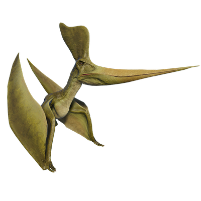

Useful Website
Geosternbergia is named after American palaeontologist George F. Sternberg, who was the first to discover then genus. It is one of the largest pterosaurs, with a wingspan of over 7m and a long, tapered beak that can grab fish out of the water or be used as a spear for catching them. Geosternbergia is notable for the distinctive crest on its head, which it used to attract mates for reproduction.
